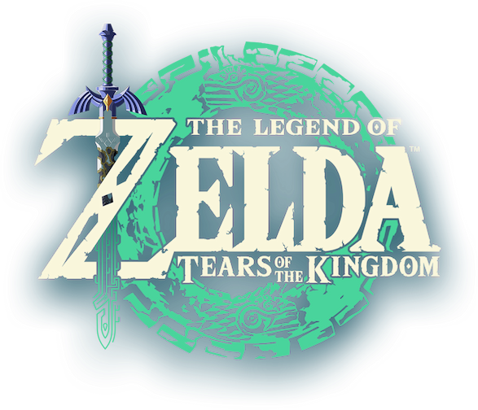

What IS The Legend of Evan?!
The Legend of Evan is the name of my personal gaming and tech based YouTube channel! My channel has a wide variety of content ranging from short gaming and tech videos, hours of livestreaming, gameplay videos and much more!
Where Does The Name Come From?
"The Legend of Evan" combines two things: my favorite video game series The Legend of Zelda along with my first name! After a while, the shortened version TLOE, pronounced "T-Lo," kind of just stuck ever since. I even created a podcast based off of the nickname called TLOE Talks!
Logo for the latest Legend of Zelda game: Tears of the Kingdom. Click to see more!
Why Did You Start Making Videos?
To make it short, I started making videos after years of watching many YouTube creators become a part of my life for entertainment. I then become more interested in gaming and technology as time went on and eventually thought "Why can't I do this too?" If you want to read more about the history of the channel click here!